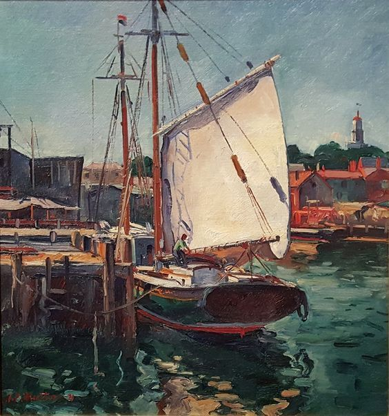
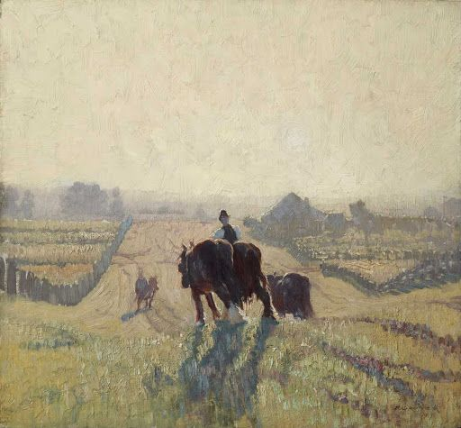
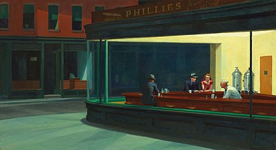
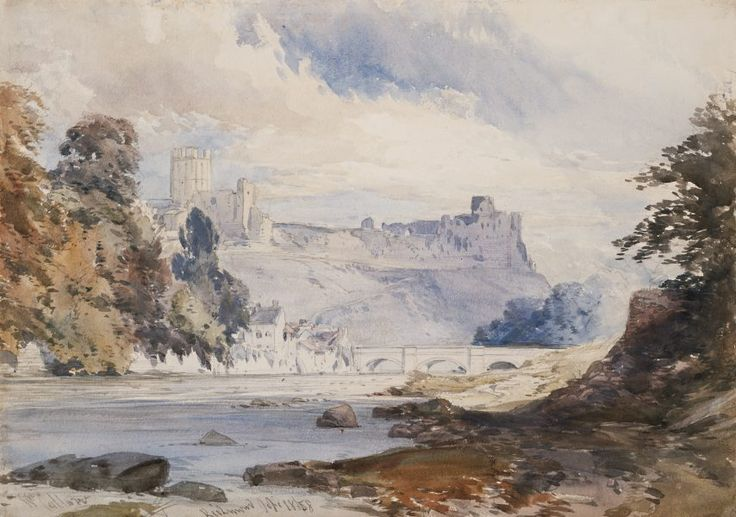
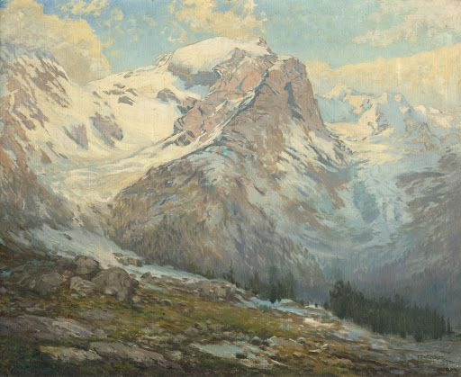
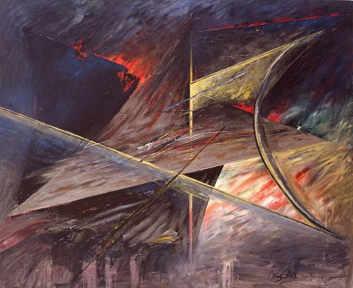
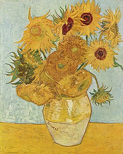

A Little Red Note Dordrecht
- Autor: James Abbott McNeill Whistler
- Año de creación: 1884
- Descripción: Esta pintura muestra un sereno paisaje holandés, con un enfoque en la luz y la sombra, representando una tranquila escena de un río con colores suaves.

The Maria at the Dock
- Autor: Antonio Pietro Martino
- Año de creación: 1931
- Descripción: Una hermosa pintura marina que muestra un gran barco atracado en un puerto, con un detallado tratamiento del agua y los alrededores.

Amanecer helado
- Autor: Elioth Gruner
- Año de creación: 1919
- Descripción: Una impresionante pintura de paisaje que muestra la suave luz de un amanecer invernal, con un campo cubierto de escarcha y árboles, capturando la tranquilidad de la naturaleza.

Nighthawks
- Autor: Edward Hopper
- Año de creación: 1942
- Descripción: Esta pintura icónica retrata una escena nocturna en un diner urbano, con figuras solitarias e isoladas bajo una luz artificial intensa, simbolizando la experiencia moderna estadounidense.

Richmond, Yorkshire
- Autor: William Callow
- Año de creación: 1858
- Descripción: Un paisaje pintoresco de Inglaterra que muestra la ciudad de Richmond, Yorkshire, con un río que atraviesa el pintoresco campo.

El paisaje montañoso
- Autor: Ferdinand Engelmüller
- Año de creación: Siglo XIX
- Descripción: Una hermosa representación de las montañas alpinas, con un terreno accidentado y lagos serenos, mostrando la sublime belleza de la naturaleza.

Transformaciones
- Autor: Pérez Celis
- Año de creación: 1980
- Descripción: Una obra vibrante y abstracta que combina elementos de la cultura latinoamericana, con patrones geométricos y colores dinámicos.

Sunflowers
- Autor: Vincent van Gogh
- Año de creación: 1888
- Descripción: Esta famosa pintura muestra un ramo de girasoles en un jarrón, utilizando colores brillantes y pinceladas rápidas que son característicos del estilo único de Van Gogh.